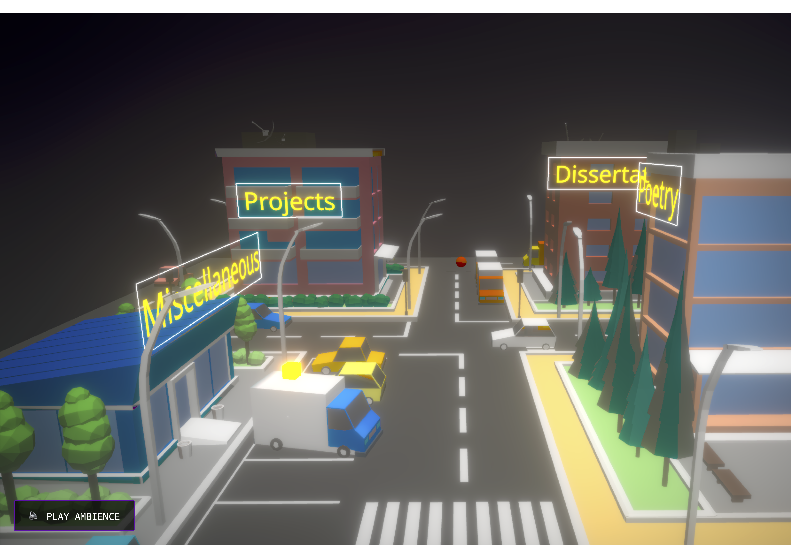

The high-performance urban landing page. This module renders a 3D city scene using Three.js and React Three Fiber, complete with dynamic day-night cycles, weather effects, and interactive UI overlays. It includes features such as achievement tracking, audio management, and camera animations to enhance user experience.


- Description:
The high-performance urban landing page. This module renders a 3D city scene using Three.js and React Three Fiber, complete with dynamic day-night cycles, weather effects, and interactive UI overlays. It includes features such as achievement tracking, audio management, and camera animations to enhance user experience.
- Source:
(require("City"))()
- Description:
Main application component rendering a Three.js city scene, interactive UI overlays, banners, and ambient experience.
- Source:
Returns:
- The complete city landing page with 3D scene and UI
Methods
(inner) CameraLight()
- Description:
CameraLight attaches a spotlight that follows the camera's position, simulating a light source that moves with the viewer.
- Source:
Returns:
- A spotlight that follows the camera
(inner) CityModel()
- Description:
Renders the 3D city model with all its associated effects, including fauna swaying, day-night cycles, and weather effects.
- Source:
(inner) DayNightCycle(root0)
Parameters:
| Name | Type | Description | ||||||
|---|---|---|---|---|---|---|---|---|
root0 |
Properties
|
(inner) isMobileDevice() → {boolean}
Returns:
True if the device is mobile, false otherwise.
- Type
- boolean
(inner) useFaunaSway(scene)
Parameters:
| Name | Type | Description |
|---|---|---|
scene |